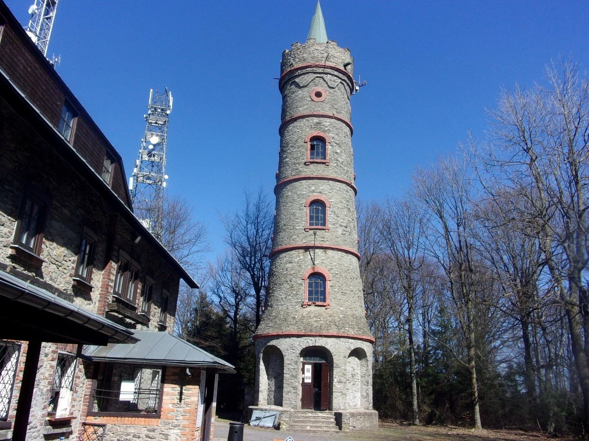

PĚŠÍ & CYKLO VÝLET · CELOROČNĚ
Jedlová hora
776 m n. m. · rozhledna
Jeden z nejvýraznějších vrcholů Lužických hor. Na vrcholu stojí historická rozhledna s dalekými výhledy do okolní krajiny. Skvělý cíl pro pěší i cyklistický výlet.
Zjistit více →